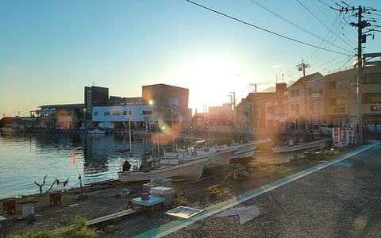
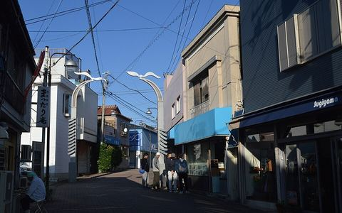

MIURA A-TEI · GUIDE三浦A邸
ガイドブック
三崎・城ヶ島・三浦海岸で、食べる・見る・体験する・買う。A邸からの徒歩時間つき。
2026年10月7日 現在。毎朝自動で更新しています。
今の季節10月 · October

イベント三浦市開催中
10/3〜12/31 三崎マグロ茜身スタンプラリー
10/3(土)〜12/31(木)
年末まで、マグロの茜身（血合い）のスタンプラリーをやっています。スマホだけで、ふつうに食事や買い物をしても押せるそうです
イベント三崎5日後
10/12 うらりでホワイトハロウィン2026
10/12(月)
祝日の10/12は、うらりで川村エミコさんのハロウィンがあります。お笑いのステージは14時からだそうです

イベント三崎11日後
10/18 第5回 三崎木遣みこしパレード
10/18(日)
14時に担ぎ上げ、15時20分に中座（休憩）、17時に遷座。木遣りの声と、神輿を高く差し上げる「さし」が見せ場です
イベント三浦市16日後
10/23 夜、菊名の飴屋踊り
10/23(金)
県の無形民俗文化財の踊りが、菊名で夜に奉納されます。平日の夜です
イベント三浦市17日後
10/24・25 花とみどりのつどい、苗木配布も
10/24(土)〜10/25(日)
ベイシアの2階で花とみどりのつどい。先着でブルーベリーの苗がもらえます
イベント横須賀18日後
10/25 よこすかみこしパレード、約50基
10/25(日)
三崎のパレードの1週間後。規模は横須賀の方が大きく50基。京急横須賀中央駅から徒歩1分
イベント三崎18日後
10/25 三崎港町まつり、うらりで
10/25(日)
今年の港町まつりは10/25。マグロ尽くしの日です
定番8日後
三浦みかん狩り 開園
10/15(木)頃
帰りに寄れます。園によって開園日が違うので要確認
定番25日後
三崎港町まつり＋三崎・城ヶ島花火大会
11/1(日)頃
マグロ尽くしの日。花火は20分ほどですが港と島どちらからも見えます
定番30日後
面神楽奉納舞（海南神社 神楽殿）11/6・7
11/6(金)
三崎の古い神楽。夜、神楽殿で見られます
おすすめの場所Places
掲載中の場所はまだありません。
この条件では見つかりません。